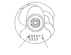

|
Rod Bearing Selection
Each rod falls into one of four tolerance ranges, from 0 to 0.024 mm (0.0009 in.), in 0.006 mm (0.0002 in.) increments, depending on the size of its big end bore.
It's then stamped with a number or bar (1, 2, 3, or 4/l, ll, lll, or llll) indicating the range. You may find any combination of 1, 2, 3, or 4/l, ll, lll, or llll in any engine.
Inspect the connecting rod for cracks and heat damage.
Connecting Rod Journal Code Locations
Numbers or bars have been stamped on the side of each connecting rod as a code for the size of the big end. Use them, and the letters or bars stamped on the crank (codes for rod journal size), to choose the correct bearings. If the codes are indecipherable because of an accumulation of dirt and dust, do not scrub them with a wire brush or scraper. Clean them only with solvent or detergent.
|
Connecting rod journal code locations (Letters or Bars)
 |